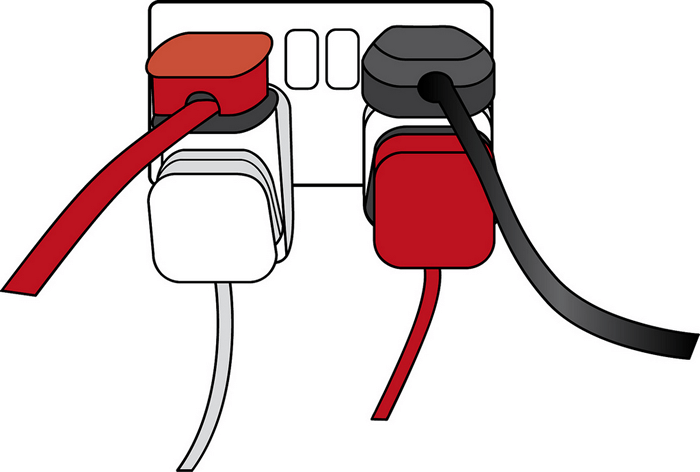

{{LearnSidebar}}{{NextMenu(“Learn/JavaScript/Client-side_web_APIs/Manipulating_documents”, “Learn/JavaScript/Client-side_web_APIs”)}}
First up, we’ll start by looking at APIs from a high level — what are they, how do they work, how to use them in your code, and how are they structured? We’ll also take a look at what the different main classes of APIs are, and what kind of uses they have.
| Prerequisites: | Basic computer literacy, a basic understanding of HTML and CSS, JavaScript basics (see first steps, building blocks, JavaScript objects). |
|---|---|
| Objective: | To gain familiarity with APIs, what they can do, and how you can use them in your code. |
Application Programming Interfaces (APIs) are constructs made available in programming languages to allow developers to create complex functionality more easily. They abstract more complex code away from you, providing some easier syntax to use in its place.
As a real-world example, think about the electricity supply in your house, apartment, or other dwellings. If you want to use an appliance in your house, you plug it into a plug socket and it works. You don’t try to wire it directly into the power supply — to do so would be really inefficient and, if you are not an electrician, difficult and dangerous to attempt.

Image source: Overloaded plug socket by The Clear Communication People, on Flickr.
In the same way, if you want to say, program some 3D graphics, it is a lot easier to do it using an API written in a higher-level language such as JavaScript or Python, rather than try to directly write low level code (say C or C++) that directly controls the computer’s GPU or other graphics functions.
Note: See also the API glossary entry for further description.
Client-side JavaScript, in particular, has many APIs available to it — these are not part of the JavaScript language itself, rather they are built on top of the core JavaScript language, providing you with extra superpowers to use in your JavaScript code. They generally fall into two categories:
So above, we talked about what client-side JavaScript APIs are, and how they relate to the JavaScript language. Let’s recap this to make it clearer, and also mention where other JavaScript tools fit in:
There are a huge number of APIs available in modern browsers that allow you to do a wide variety of things in your code. You can see this by taking a look at the MDN APIs index page.
In particular, the most common categories of browser APIs you’ll use (and which we’ll cover in this module in greater detail) are:
XMLHttpRequest and the Fetch API. You may also come across the term Ajax, which describes this technique. Find out more about such APIs in Fetching data from the server.Third-party APIs come in a large variety; some of the more popular ones that you are likely to make use of sooner or later are:
Note: You can find information on a lot more 3rd party APIs at the Programmable Web API directory.
Different JavaScript APIs work in slightly different ways, but generally, they have common features and similar themes to how they work.
Your code interacts with APIs using one or more JavaScript objects, which serve as containers for the data the API uses (contained in object properties), and the functionality the API makes available (contained in object methods).
Note: If you are not already familiar with how objects work, you should go back and work through our JavaScript objects module before continuing.
Let’s return to the example of the Web Audio API — this is a fairly complex API, which consists of a number of objects. The most obvious ones are:
So how do these objects interact? If you look at our simple web audio example (see it live also), you’ll first see the following HTML:
<audio src="outfoxing.mp3"></audio>
<button class="paused">Play</button>
<br>
<input type="range" min="0" max="1" step="0.01" value="1" class="volume">We, first of all, include an <audio> element with which we embed an MP3 into the page. We don’t include any default browser controls. Next, we include a {{htmlelement(“button”)}} that we’ll use to play and stop the music, and an {{htmlelement(“input”)}} element of type range, which we’ll use to adjust the volume of the track while it’s playing.
Next, let’s look at the JavaScript for this example.
We start by creating an AudioContext instance inside which to manipulate our track:
const AudioContext = window.AudioContext || window.webkitAudioContext;
const audioCtx = new AudioContext();Next, we create constants that store references to our <audio>, <button>, and <input> elements, and use the {{domxref(“AudioContext.createMediaElementSource()”)}} method to create a MediaElementAudioSourceNode representing the source of our audio — the <audio> element will be played from:
const audioElement = document.querySelector('audio');
const playBtn = document.querySelector('button');
const volumeSlider = document.querySelector('.volume');
const audioSource = audioCtx.createMediaElementSource(audioElement);Next up we include a couple of event handlers that serve to toggle between play and pause when the button is pressed and reset the display back to the beginning when the song has finished playing:
// play/pause audio
playBtn.addEventListener('click', function() {
// check if context is in suspended state (autoplay policy)
if (audioCtx.state === 'suspended') {
audioCtx.resume();
}
// if track is stopped, play it
if (this.getAttribute('class') === 'paused') {
audioElement.play();
this.setAttribute('class', 'playing');
this.textContent = 'Pause'
// if track is playing, stop it
} else if (this.getAttribute('class') === 'playing') {
audioElement.pause();
this.setAttribute('class', 'paused');
this.textContent = 'Play';
}
});
// if track ends
audioElement.addEventListener('ended', function() {
playBtn.setAttribute('class', 'paused');
playBtn.textContent = 'Play';
});Note: Some of you may notice that the
play()andpause()methods being used to play and pause the track are not part of the Web Audio API; they are part of the {{domxref(“HTMLMediaElement”)}} API, which is different but closely-related.
Next, we create a {{domxref(“GainNode”)}} object using the {{domxref(“BaseAudioContext/createGain”, “AudioContext.createGain()”)}} method, which can be used to adjust the volume of audio fed through it, and create another event handler that changes the value of the audio graph’s gain (volume) whenever the slider value is changed:
const gainNode = audioCtx.createGain();
volumeSlider.addEventListener('input', function() {
gainNode.gain.value = this.value;
});The final thing to do to get this to work is to connect the different nodes in the audio graph up, which is done using the {{domxref(“AudioNode.connect()”)}} method available on every node type:
The audio starts in the source, which is then connected to the gain node so the audio’s volume can be adjusted. The gain node is then connected to the destination node so the sound can be played on your computer (the {{domxref(“BaseAudioContext/destination”, “AudioContext.destination”)}} property represents whatever is the default {{domxref(“AudioDestinationNode”)}} available on your computer’s hardware, e.g. your speakers).
When using an API, you should make sure you know where the entry point is for the API. In The Web Audio API, this is pretty simple — it is the {{domxref(“AudioContext”)}} object, which needs to be used to do any audio manipulation whatsoever.
The Document Object Model (DOM) API also has a simple entry point — its features tend to be found hanging off the {{domxref(“Document”)}} object, or an instance of an HTML element that you want to affect in some way, for example:
const em = document.createElement('em'); // create a new em element
const para = document.querySelector('p'); // reference an existing p element
em.textContent = 'Hello there!'; // give em some text content
para.appendChild(em); // embed em inside paraThe Canvas API also relies on getting a context object to use to manipulate things, although in this case, it’s a graphical context rather than an audio context. Its context object is created by getting a reference to the {{htmlelement(“canvas”)}} element you want to draw on, and then calling its {{domxref(“HTMLCanvasElement.getContext()”)}} method:
Anything that we want to do to the canvas is then achieved by calling properties and methods of the context object (which is an instance of {{domxref(“CanvasRenderingContext2D”)}}), for example:
Ball.prototype.draw = function() {
ctx.beginPath();
ctx.fillStyle = this.color;
ctx.arc(this.x, this.y, this.size, 0, 2 * Math.PI);
ctx.fill();
};Note: You can see this code in action in our bouncing balls demo (see it running live also).
We already discussed events earlier on in the course in our Introduction to events article, which looks in detail at what client-side web events are and how they are used in your code. If you are not already familiar with how client-side web API events work, you should go and read this article first before continuing.
Some web APIs contain no events, but most contain at least a few. The handler properties that allow us to run functions when events fire are generally listed in our reference material in separate “Event handlers” sections.
We already saw a number of event handlers in use in our Web Audio API example above.
To provide another example, instances of the XMLHttpRequest object (each one represents an HTTP request to the server to retrieve a new resource of some kind) has a number of events available on them, for example, the load event is fired when a response has been successfully returned containing the requested resource, and it is now available.
The following code provides a simple example of how this would be used:
let requestURL = 'https://mdn.github.io/learning-area/javascript/oojs/json/superheroes.json';
let request = new XMLHttpRequest();
request.open('GET', requestURL);
request.responseType = 'json';
request.send();
request.onload = function() {
const superHeroes = request.response;
populateHeader(superHeroes);
showHeroes(superHeroes);
}Note: You can see this code in action in our ajax.html example (see it live also).
The first five lines specify the location of the resource we want to fetch, create a new instance of a request object using the XMLHttpRequest() constructor, open an HTTP GET request to retrieve the specified resource, specify that the response should be sent in JSON format, then send the request.
The onload handler function then specifies what we do with the response. We know the response will be successfully returned and available after the load event has fired (unless an error occurred), so we save the response containing the returned JSON in the superHeroes variable, then pass it to two different functions for further processing.
WebAPI features are subject to the same security considerations as JavaScript and other web technologies (for example same-origin policy), but they sometimes have additional security mechanisms in place. For example, some of the more modern WebAPIs will only work on pages served over HTTPS due to them transmitting potentially sensitive data (examples include Service Workers and Push).
In addition, some WebAPIs request permission to be enabled from the user once calls to them are made in your code. As an example, the Notifications API asks for permission using a pop-up dialog box:
The Web Audio and {{domxref(“HTMLMediaElement”)}} APIs are subject to a security mechanism called autoplay policy — this basically means that you can’t automatically play audio when a page loads — you’ve got to allow your users to initiate audio play through a control like a button. This is done because autoplaying audio is usually really annoying and we really shouldn’t be subjecting our users to it.
Note: Depending on how strict the browser is, such security mechanisms might even stop the example from working locally, i.e. if you load the local example file in your browser instead of running it from a web server. At the time of writing, our Web Audio API example wouldn’t work locally on Google Chrome — we had to upload it to GitHub before it would work.
At this point, you should have a good idea of what APIs are, how they work, and what you can do with them in your JavaScript code. You are probably excited to start actually doing some fun things with specific APIs, so let’s go! Next up, we’ll look at manipulating documents with the Document Object Model (DOM).
{{NextMenu(“Learn/JavaScript/Client-side_web_APIs/Manipulating_documents”, “Learn/JavaScript/Client-side_web_APIs”)}}